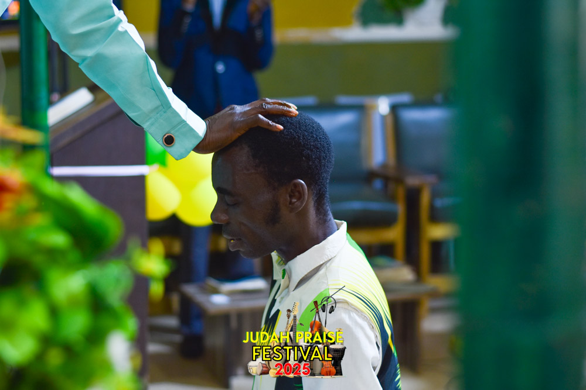

Departments & Groups
Explore the ministries and groups of Kingdom Citizens Church International, each designed to nurture faith, service, and excellence in the body of Christ.
Pastoral Group

Pastor Sam Balogun
Founder & Senior Pastor, guiding the Church with divine wisdom and passion for the Kingdom.

Pastor Mrs Felicia Balogun
Co-founder, nurturing believers and strengthening families through love and guidance.

Pastor Wale Somoye
Resident Pastor, leading the Osara branch and mentoring the congregation faithfully.

Pastor Peter Oluwakunbi
Youth Pastor, equipping young believers to walk boldly in their God-given destiny.

Evangelist Daniel Onaleye
Head of Choir & Evangelist, inspiring worship and guiding evangelistic missions.
Youth Section
The Youth Section empowers young believers to grow in faith, leadership, and service through mentorship, teaching, and fellowship.
Choir Section
The Choir Section leads worship, glorifies God, and inspires heartfelt praise across the Church community.
Royal Pillars
Dedicated men and women committed to prayer, mentorship, and community service, strengthening the Church family.
Men of Issachar
Seek spiritual insight and discernment, guiding the Church with wisdom and faithful service.
Children Section
Nurturing the next generation in faith, love, and knowledge of God’s Word through fun and engaging activities.
Media Department
Capturing and sharing the Church’s message across platforms with creativity, excellence, and dedication.